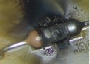

Aula 6 - CÁLCULO DE POTÊNCIA DE RESISTORES
Para calcular a Potência dissipada num Resistor, usaremos a seguinte fórmula:
P= R * I2 (Potência igual a Resitência multiplicada pela Corrente ao quadrado)
Onde P = Potência (em Watts) , R = Resistência (em Ohms) e I = Corrente (em Amperes)
Também temos a fórmula que usa a Tensão:
P= V2 / R (Potência igual a Tensão ao quadrado dividido pela Resistência
Exemplo prático:
Calcule a potência dissipada por um Ferro de Solda que possui uma resistência de 10 Ohms e que consome uma corrente de 5 Amperes.
P = R * I
2P = 10 * 5
2P = 10 * 25
P = 250 W (Watts)
Exemplo 2:
Calcule qual a Potência mínima dissipada por um Resistor de 5 Ohm, que tem uma queda de tensão aplicada sobre ele de 10 Volts
P = V
2 / R
P = 10
2 / R
P = 10
2 / 5
P = 100 / 5
P = 20W (Watts)
Quando a Potência dissipada por um resistor é maior do que ele pode suportar, ela poderá danificar como na figura abaixo:

voltar